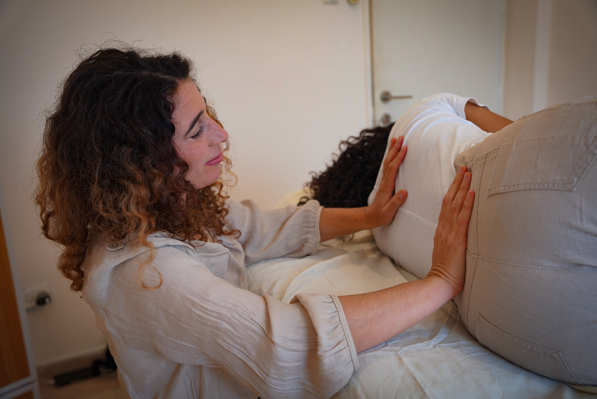
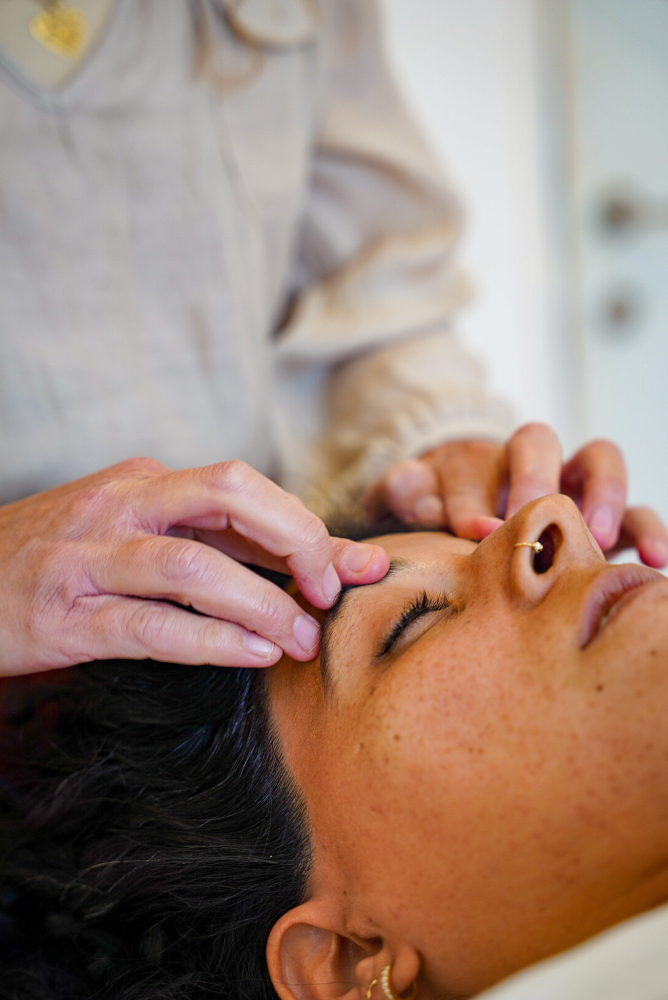
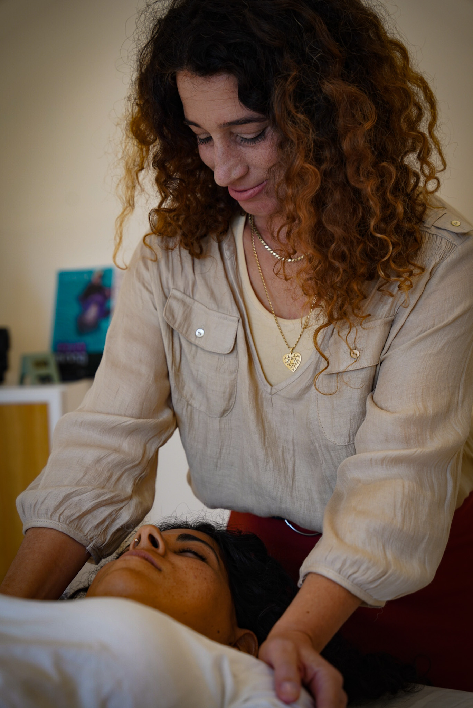
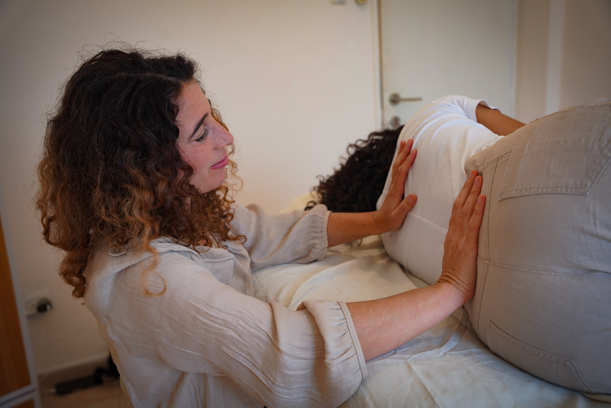
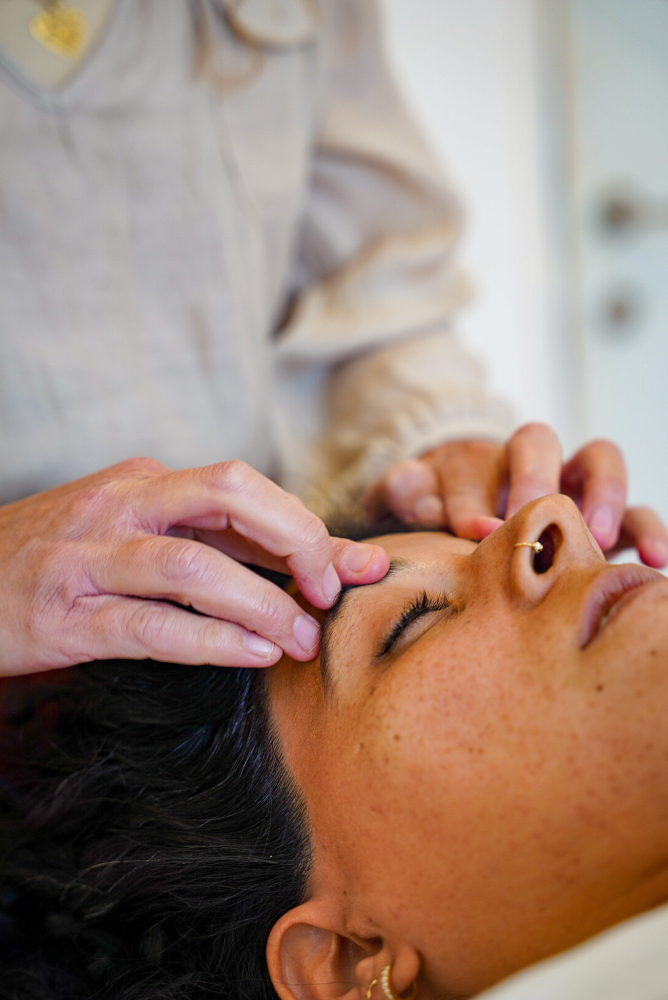
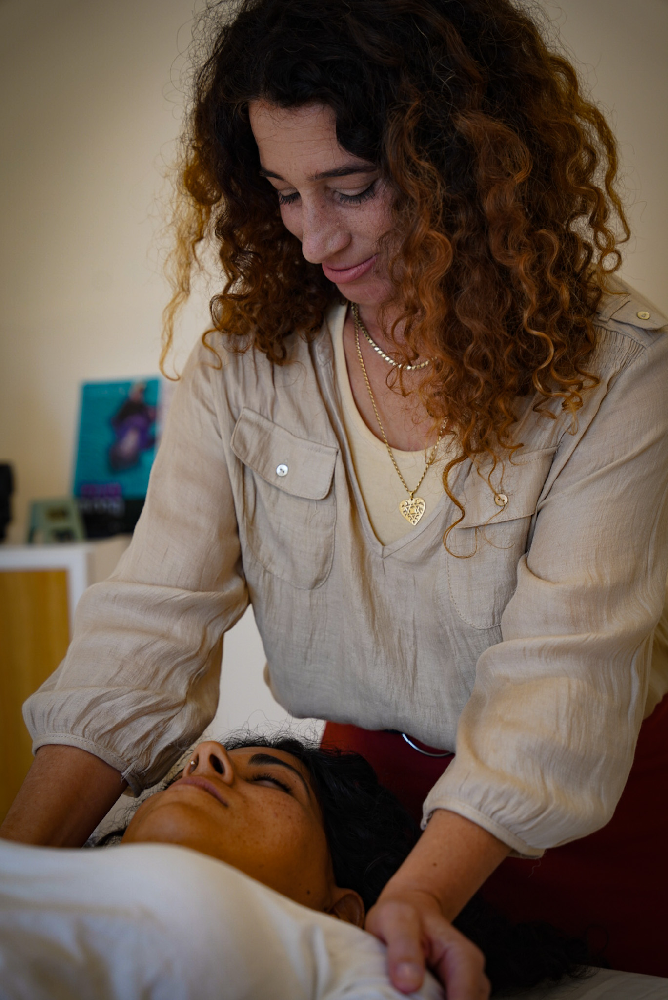
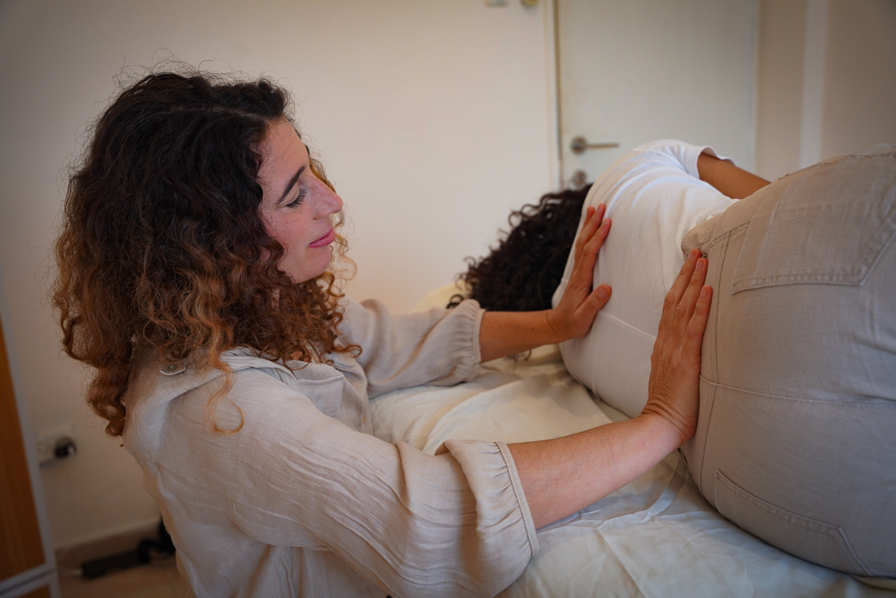
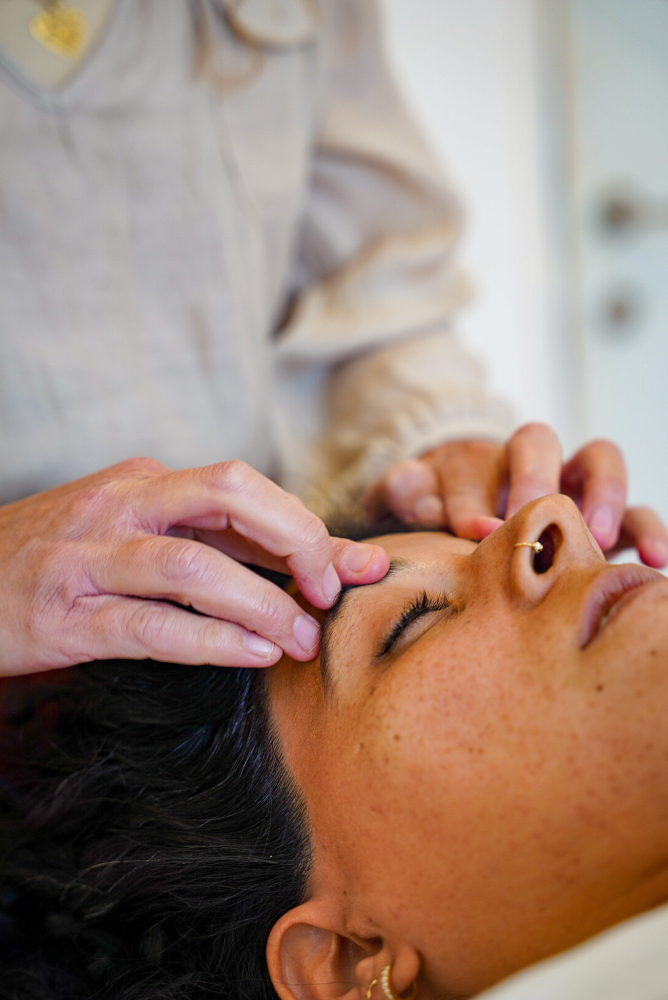
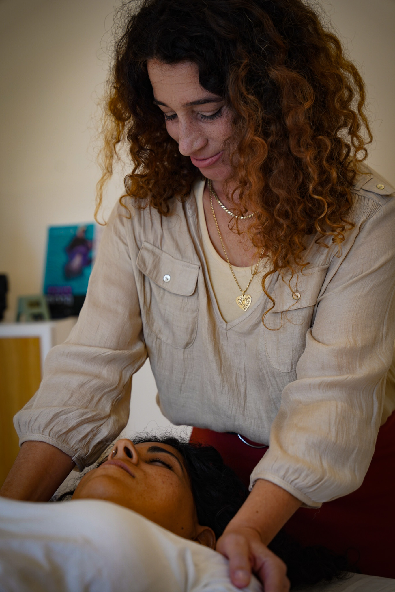

חדר הטיפולים
חדר הטיפולים שלי נועד לספק תחושה של ביטחון, חום, ונוחות.
 





ברוכה הבאה. אם הגעת, כנראה שאת מוכנה לתהליך ריפוי. אני כאן להציע לך תמיכה והחלמה דרך חיבור לגוף.
לשיחת היכרות ראשונהמוזמנת לחיות חיים עירניים ומרגשים - במקום חיי הישרדות
הגוף שולח מסרים דרך תחושות. העבודה עם הגוף משחררת מתח, ומרגיעה את מערכת העצבים, מזרימה את הנוזלים, משמנת את המפרקים ומשחררת נוקשות וחסימות. בתהליך טיפולי הגוף לומד בקצב שלו שפה חדשה שמובילה לריפוי ושינוי.
דפוסים והרגלים שגדלנו עליהם מוטמעים ונרשמים בגוף שלנו, גופנו אוגר זכרונות עבר ורגשות. שינוי דפוסים או הרגלים אינם קלים, ולפעמים בלתי אפשריים. דרך קצב הנשימה והתחושות שצפות, הגוף לומד שפה חדשה, שפה של חיבור בין הגוף לנפש ושם מתרחשים ניסים שמאפשרים הקלה, צמיחה ושחרור.
הגוף שולח מסרים דרך תחושות. העבודה עם הגוף משחררת מתח, ומרגיעה את מערכת העצבים.
הטיפול עם מתבגרות מתמקד בחיבור רגשי ובשיחה, תוך שמירה על גישה מותאמת לגיל ולצרכים האישיים.
טיפול בתינוקות וילדים מתבצע באמצעות מגע מרפא עדין המסייע להרגיע את מערכת העצבים.
סדנה חווייתית, המשלבת אימפרוביזציה, תנועה, דרמה ומשחקיות. הסדנאות מעודדות להתבטא ולהתנסות, תוך יצירת חיבור עמוק לגוף ולנפש, ומסייעות בריפוי ושחרור רגשות וחוויות.
הסדנה מתחברת לרוח הזמן ולמעגל השנה היהודי, המהווים זמנים מיוחדים של חיבור למחזורי החיים. אנו מזמינות את המשתתפות לחוות בנועם תהליכי התפתחות אישית משמעותיים.
זוהי הזדמנות ייחודית להציץ פנימה, לגלות פתרונות חדשים, ולהעצים את הקשר העמוק עם עצמנו ועם הגוף.
חדר הטיפולים שלי נועד לספק תחושה של ביטחון, חום, ונוחות.




הכל התחיל מעבר לים. אחרי לימודי ביוטכנולוגיה באוניברסיטה ומספר שנות עבודה במעבדה, הנפש ביקשה חופש. התגלגלתי לשליחות בהודו, שם פתחתי גן ילדים ובמקביל תמכתי במטיילים שאיבדו כיוון וחוו משבר וחרדה.
היום המפגש עם הגוף הוא חלק עיקרי בתהליך הטיפולי - מסע לגילוי עצמי דרך הכרת תחושות הגוף.